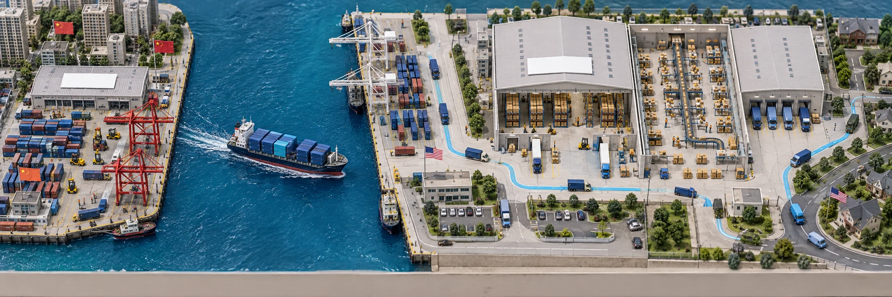

CAMERA STUDY / C2
바다를 따라,
창고 안으로.
중국에서 미국까지는 위에서 따라갑니다.
미국에 도착하면 시점을 낮춰 입고, 포장, 배송으로 이어갑니다.
01 / FOLLOW & ARRIVE
C2 · 하이 앵글에서 창고로
CN 중국 출발PACIFIC 태평양 횡단US 미국 도착 · 출고

전경 이미지를 불러오지 못했습니다. 새로고침해 주세요.
동작 줄이기 설정이 켜져 있습니다. 구간 버튼이나 슬라이더로 장면을 선택하세요.
4.5초 로고 인트로 뒤에 기존 30초 여정이 이어집니다. 데스크톱은 여정 15초부터 입고·포장·출고 가로 이미지로, 모바일은 여정 10초의 미국 도착부터 항만·입고·포장·배송 세로 이미지 네 장으로 전환됩니다.
02 / CAMERA LANGUAGE
운송은 넓게,
작업은 가까이.
중국 부두에서 선박과 미국 항만을 따라 카메라가 이동하고 확대됩니다. 미국에 도착하면 창고로 접근한 뒤 낮은 사선 시점의 입고 장면으로 전환합니다.
이후에는 첨부한 세 이미지가 순서대로 이어집니다. 컨테이너와 보관 랙, 포장 작업대와 컨베이어, 배송 차량을 따라 시선을 옮깁니다.